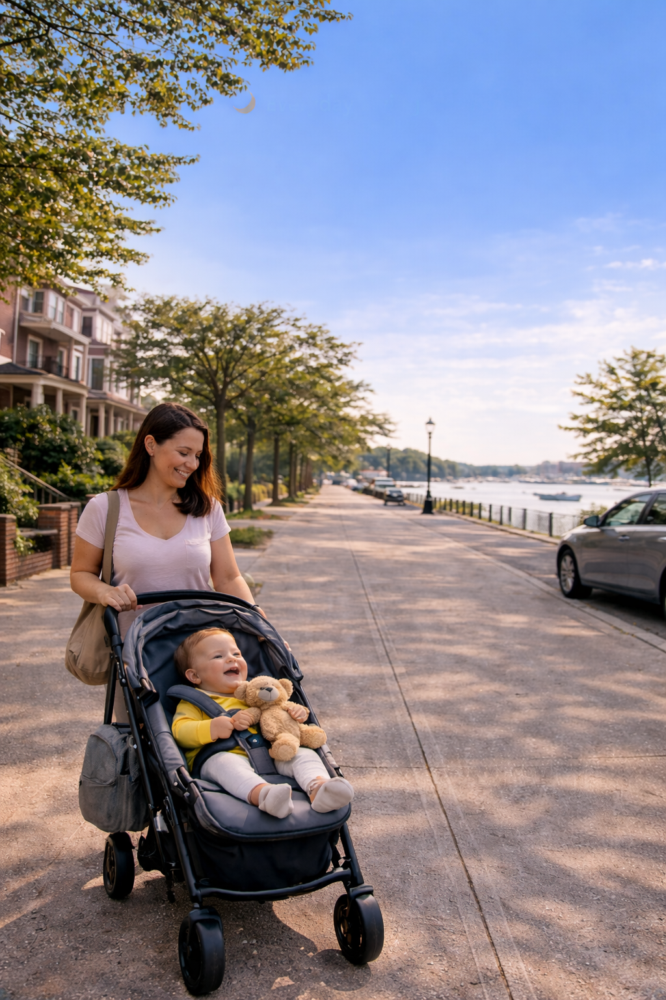
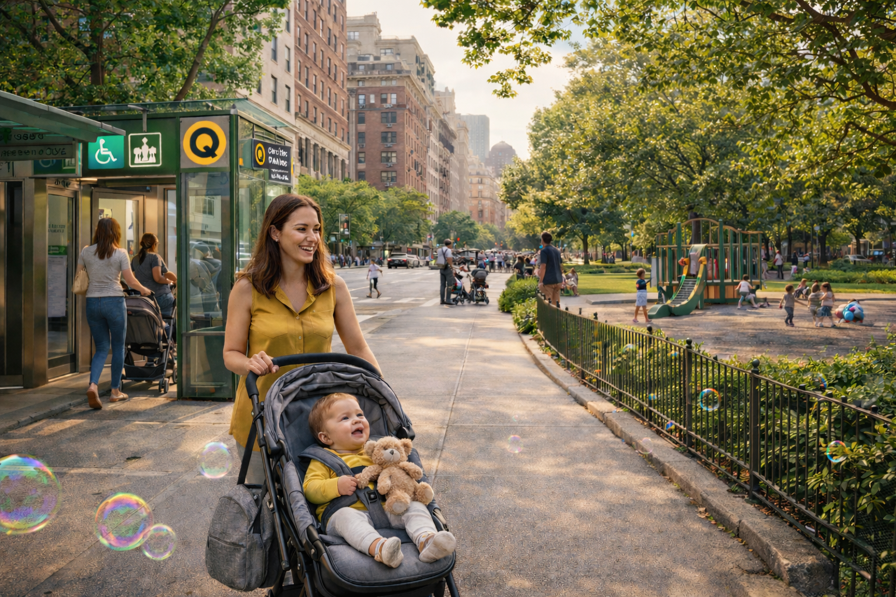

A calm, parent-focused guide to living near the Q subway line exploring parks, stroller access, healthcare, and everyday comfort.
The Q Line is a major New York City subway route that connects the Upper East Side of Manhattan with central Brooklyn. Unlike many high-speed commuter lines, the Q passes through residential, neighborhood-focused areas making it especially appealing for families raising young children in the city.
Along the route, you’ll find a mix of tree-lined streets, local playgrounds, grocery stores, pediatric clinics, and calmer daily rhythms. For parents, this balance between accessibility and livability can make everyday life noticeably easier.
Manhattan & Brooklyn
Residential, walkable, local
Families, caregivers, strollers
Commutes, school runs, errands
Why families choose the Q Line:
predictable service, access to parks, calmer stations,
and neighborhoods designed for everyday life not just commuting.
This map shows how the Q subway line connects calmer, residential neighborhoods across Manhattan and Brooklyn — areas that naturally support life with a baby.
Unlike nightlife-heavy subway routes, the Q Line passes through neighborhoods designed around daily living — parks, schools, clinics, and walkable streets.
Tip: Zoom in to see how closely each stop aligns with parks and residential blocks.
When you’re raising a baby in New York City, small details matter. Access to parks, elevators, clinics, and calmer streets can turn daily routines from stressful into manageable.
Parks, playgrounds, and open sidewalks give parents and children space to slow down and reset.
Elevator access and wider platforms reduce daily friction when navigating the city with a baby.
Nearby pediatric care, pharmacies, and essentials bring peace of mind when routines change quickly.

Life with a baby is shaped less by landmarks and more by small, repeated moments morning stroller walks, quiet grocery runs, nearby benches, and predictable routines.
Neighborhoods along the Q Line tend to support these rhythms naturally. Streets feel calmer, parks are woven into daily life, and errands don’t require constant planning. Over time, this consistency becomes one of the most valuable comforts for new parents.
Walkable blocks and nearby essentials reduce daily decision fatigue.
Quieter streets and residential pacing help families wind down.
Explore Neighborhoods
Each neighborhood along the Q Line offers a unique rhythm of city life. Use the tabs to explore which areas feel most comfortable for families with young children.
The Upper East Side combines classic residential streets with some of the most family-oriented infrastructure in the city. Wide sidewalks, reliable transit access, and proximity to Central Park make daily routines smoother for parents navigating life with a baby.
Daily life feel: Predictable, walkable, and well-supported ideal for first-time parents adjusting to city routines.

Explore neighborhoods designed for family life — without giving up city convenience.